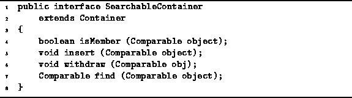

Data Structures and Algorithms
with Object-Oriented Design Patterns in Java
Data Structures and Algorithms
with Object-Oriented Design Patterns in JavaA searchable container is an extension of the container abstraction. It adds to the interface provided for containers methods for putting objects in and taking objects out, for testing whether a given object is in the container, and a method to search the container for a given object.
The definition of the SearchableContainer interface is
shown in Program  .
The SearchableContainer interface extends the Container
interface given in Program .
It adds four methods to the inherited interface.
.
The SearchableContainer interface extends the Container
interface given in Program .
It adds four methods to the inherited interface.

Program: SearchableContainer interface.
The isMember method is a boolean-valued method which takes as its argument any object that implements the Comparable interface. The purpose of this method is to test whether the given object instance is in the container.
The purpose of the insert method is to put an object into the container. The insert method takes a Comparable object and inserts it into the container. Similarly, the withdraw method is used to remove an object from a container. The argument refers to the object to be removed.
The final method, find, is used to locate an object in a container and to return a reference to that object. In this case, it is understood that the search is to be done using the comparison methods defined in the Comparable interface. That is, the find method is not to be implemented as a search of the container for the given object but rather as a search of the container for an object which compares equal to the given object.
This is an important subtlety in the semantics of find:
The search is not for the given object,
but rather for an object which compares equal to the given object.
These semantics are particularly useful when using
associations ,
which are defined in Section .
In the event that the find method fails to find an object equal to the specified object, then it will return null. Therefore, the user of the find method should test explicitly the returned value to determine whether the search was successful. Also, the find method does not remove the object it finds from the container. An explicit call of the withdraw method is needed to actually remove the object from the container.
 Copyright © 1998 by Bruno R. Preiss, P.Eng. All rights reserved.
Copyright © 1998 by Bruno R. Preiss, P.Eng. All rights reserved.